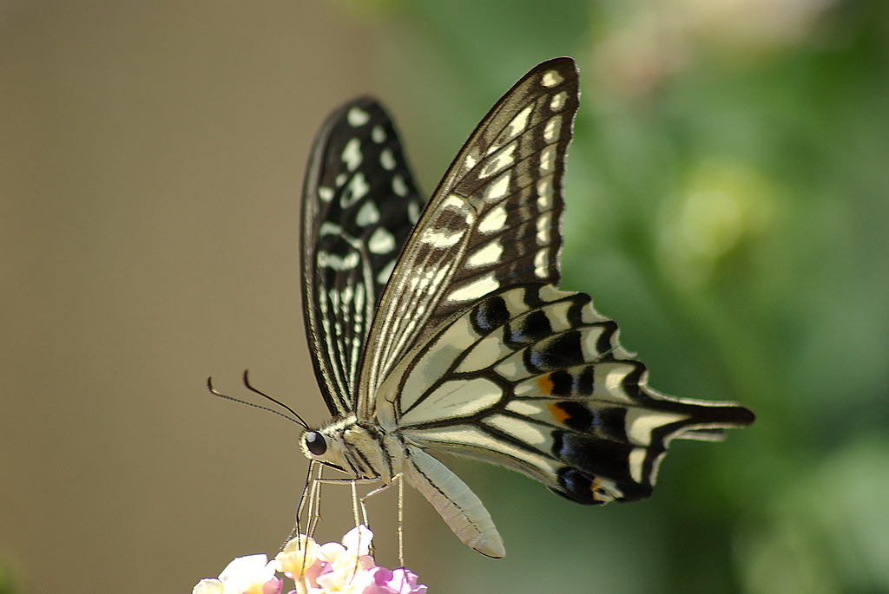
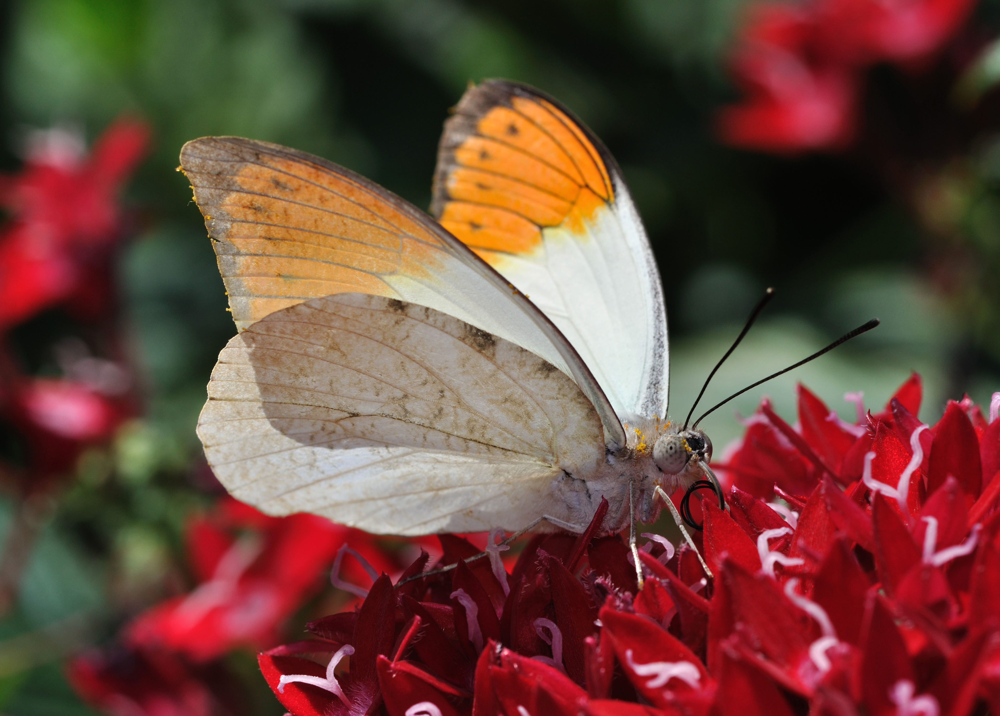
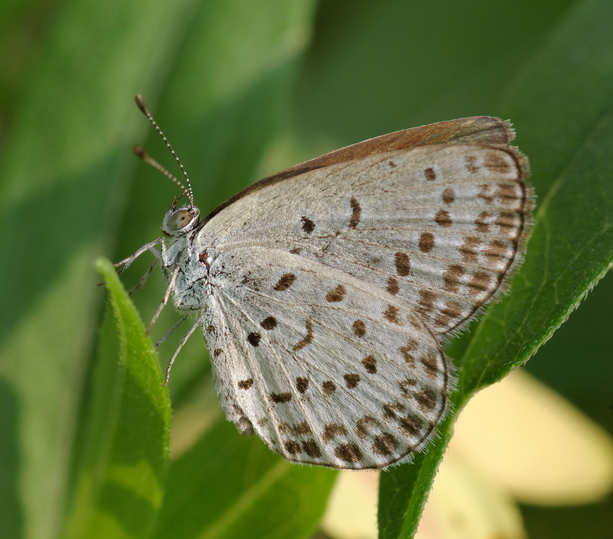
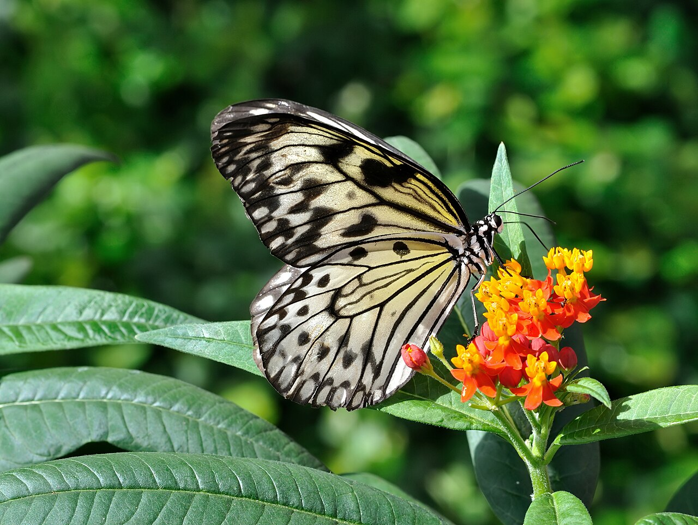
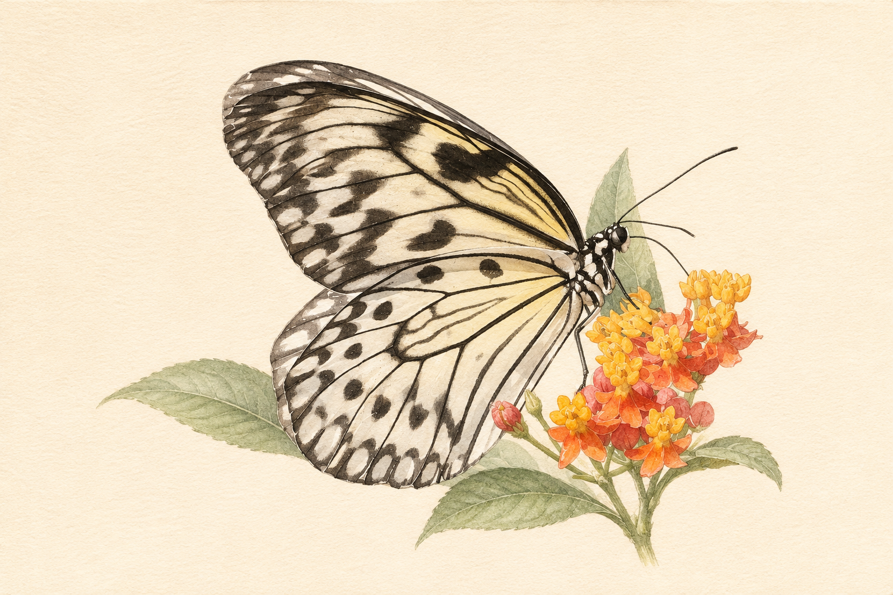
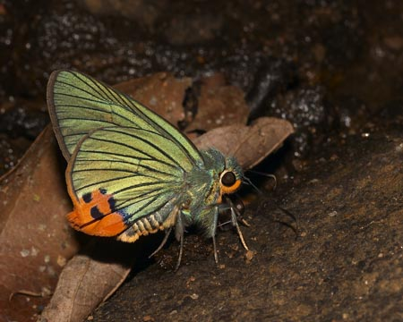
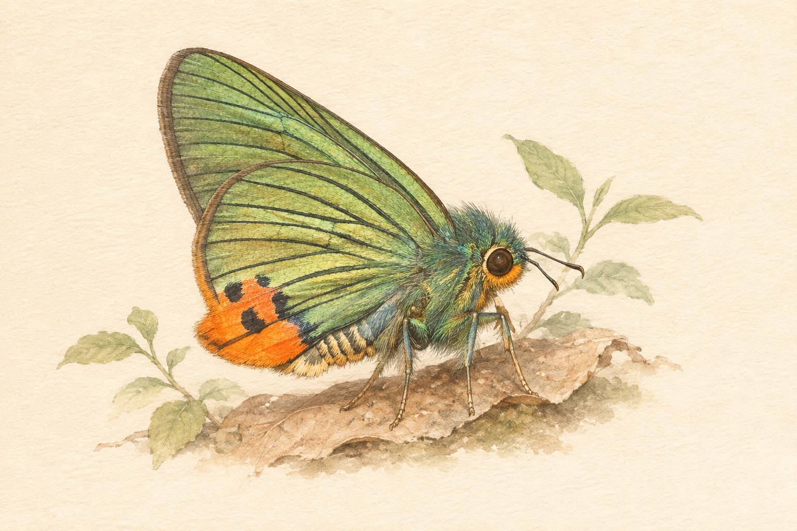

ছবি, সূত্র ও সম্পাদনা নীতি
এই বিশ্বকোষে অনুরোধকৃত ১৬৫টি নাম সংরক্ষণ করা হয়েছে। বর্তমান বৈজ্ঞানিক নাম, পুরোনো নাম ও স্থানীয় রেকর্ডে পার্থক্য থাকলে সংশ্লিষ্ট নিবন্ধে ব্যাখ্যা আছে। অনিশ্চিত তথ্য অনুমান করে পূরণ করা হয়নি।
ছবির ব্যবহার
পাঁচটি পরিবারের প্রতিনিধির ছবিভিত্তিক AI চিত্র আছে; ১৬৫টি পৃথক প্রজাতির চিত্র তৈরি করা হয়নি। সব ছবিতে লেখা নেই, তাই দুই ভাষায় একই চিত্র ব্যবহৃত। মূল ছবির অবস্থান বা উপপ্রজাতিকে ওকিনাওয়ার প্রমাণ হিসেবে ব্যবহার করা হয়নি। ছবির সূক্ষ্ম নকশা শনাক্তকরণের জন্য নির্ভরযোগ্য ধরে নেবেন না।
Papilio xuthus

Papilio xuthus 1024px.jpg


Hebomoia glaucippe

File:Hebomoia glaucippe qtl2.jpg


Zizeeria maha


File:Pale Grass Blue October 2007.jpg

Idea leuconoe

File:Idea leuconoe qtl1.jpg


Choaspes benjaminii

File:Choaspes benjaminii.jpg


সম্পাদনা ও তথ্যসূত্র
স্থানীয় দ্বীপের তথ্য প্রধানত 沖縄蝶類生態図鑑 থেকে; আকার ও লিঙ্গভেদ অন্যান্য প্রজাতিভিত্তিক নির্দেশিকা ও গবেষণা দিয়ে সম্পূরক করা হয়েছে। বাংলা নামগুলি ব্যাখ্যামূলক; স্বীকৃত বাংলা সাধারণ নাম না পাওয়া গেলে বৈজ্ঞানিক নাম রাখা হয়েছে। বাংলা অনুবাদের বিশেষজ্ঞ মাতৃভাষী সম্পাদনা করা হয়নি।
শ্রেণিবিন্যাসে ভিন্ন মত থাকতে পারে। মাদারা, জানোমে ও তেঙ্গু গোষ্ঠী Nymphalidae পরিবারের অংশ; এগুলিকে আলাদা পরিবার ধরা হয়নি।